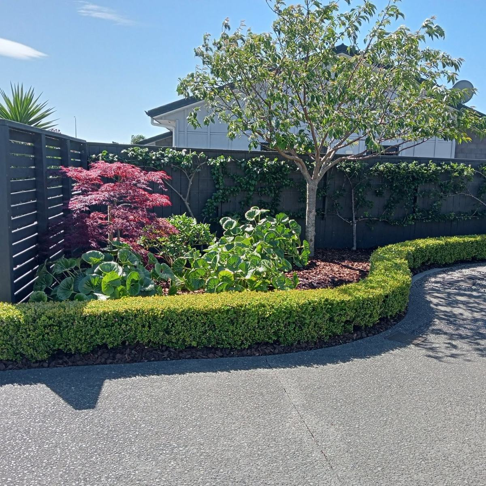
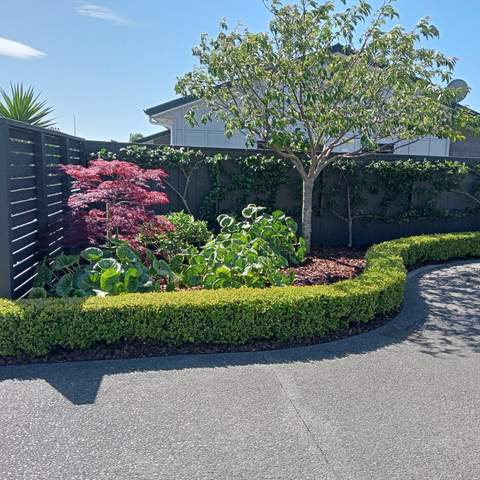
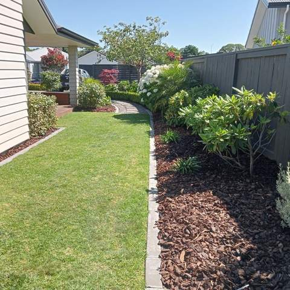
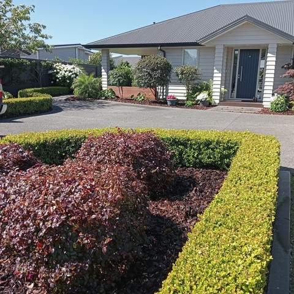
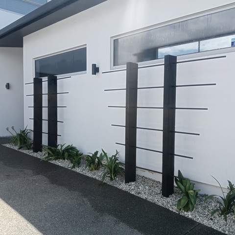
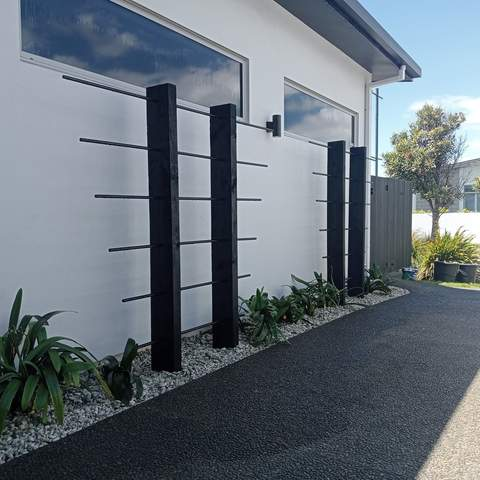

Landscaping Services in Tauranga
Full garden makeovers and new-build sections: earthworks, walls, lawn, planting, paths and decks, planned as one job.
One job, planned properly
Most landscaping projects involve several kinds of work: digging and levelling, retaining, drainage, irrigation, paving, lawn, planting and often a deck or fence. When one business plans and builds the lot, everything happens in the right order and the finished pieces line up. That is the whole idea behind Straight Line.
What a project can include
- Site clearing and earthworks with a mini digger
- Retaining walls, garden edging and raised planter beds
- Ready lawn and irrigation
- Hedges, planting, bark mulch and gravel
- Paths, feature posts and screens
- Decking and fencing
New builds and makeovers
New-build sections around Tauranga often hand over with bare clay and a boundary fence. That blank section can become a finished garden, or an older garden can be cleared and reshaped. If budget is a factor, ask Matt about doing the work in stages.
Planting for Bay of Plenty conditions
Tauranga's mild climate grows almost anything, but wind, salt and sandy soil near the coast, and heavy clay further inland, narrow down the plants that thrive with little fuss. Clipped hedges, grasses and hardy shrubs feature in many Straight Line gardens because they look sharp and stay that way.
Gardens and landscaping by Straight Line
Real photos from Matt's recent jobs. See all projects.

Curved low hedge bordering a planted garden bed with Japanese maple beside a driveway 
Side garden with lawn, curved concrete edging, bark mulch beds and established shrubs 
Front garden with clipped hedge and red-leaf shrubs in front of a house 
Black feature posts with horizontal rods, planting and gravel strip along a white wall 
Black feature posts, planting and dark path beside a modern house 
Lawn with metal edging, mulched beds, a young tree and a row of standard trees along a fence 
Mini digger excavating soil for a backyard project 
Timber-edged garden bed around a letterbox post
How we work
A simple, four-step process from first call to final tidy-up.
Enquiry
Call or text Matt on 020 4006 6910, or send the quote form. A few photos of the area help.
Site visit & itemised quote
Matt comes out, measures up and talks through options, then sends a written quote broken down by item.
Build
Work is done in the right order (earthworks, walls and drainage, irrigation, then turf, decking and planting).
Tidy handover
The site is cleaned up and you get a walk-through, plus care tips such as a watering plan for new lawn.
Landscaping: common questions
Do you help with garden design?
Matt plans the layout with you at the site visit and sets it out on site before building. If you already have a plan from a landscape designer, Matt can quote from that.
Do you landscape new-build sections?
Yes. Taking a new-build section from bare ground to a finished garden, with lawn, planting, edging, fencing and a deck, is a common type of project.
Can you remove old gardens and soil?
Yes. A mini digger and tracked dumper handle the digging and carting, including on narrow side yards, and lawns can be protected with boards while machinery moves through.
How long does a landscaping project take?
It depends on the size of the job and the mix of work involved. Your quote will set out the scope, and Matt will give you an expected timeframe before work starts.
Are quotes free?
Yes. Quotes are free and there is no obligation. Matt visits, measures up and sends a written, itemised quote.
Often combined with
Ready to transform your section?
Get a free, itemised quote from Matt. Serving Tauranga and the Western Bay of Plenty.